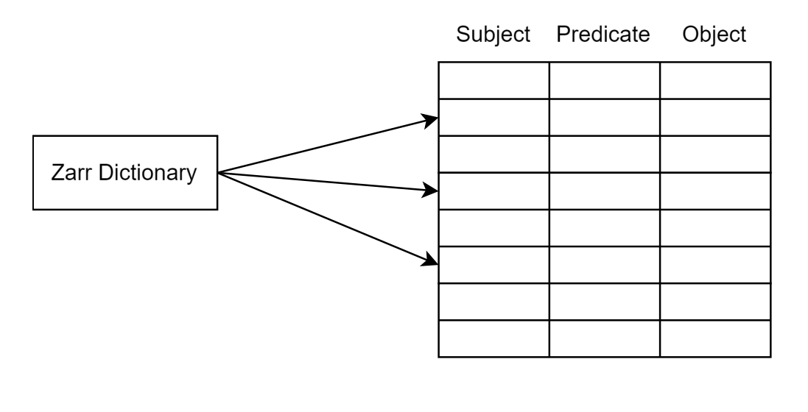
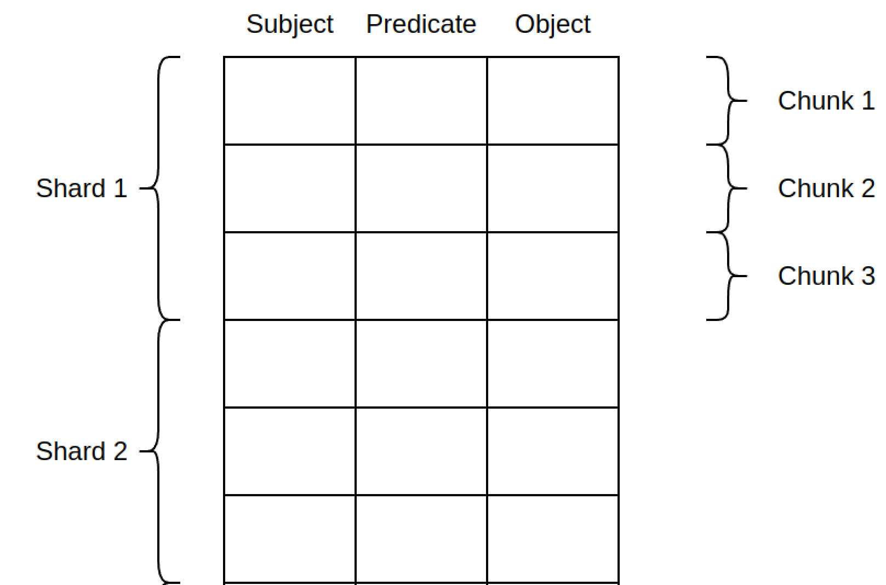
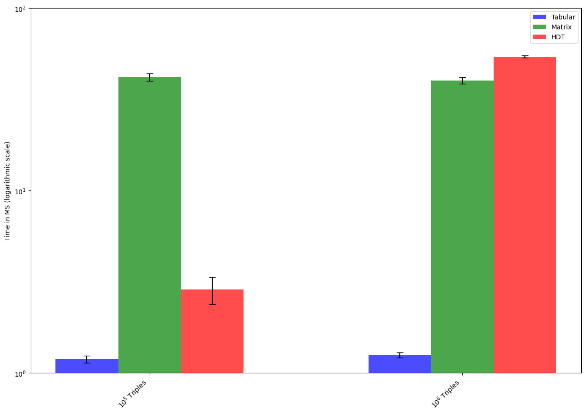
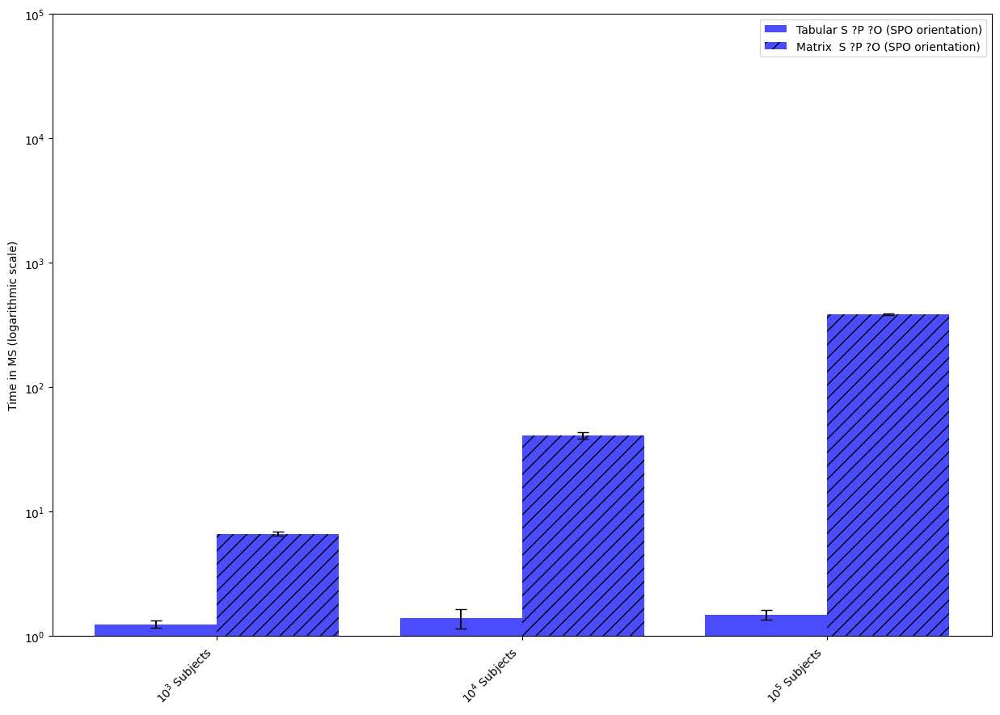
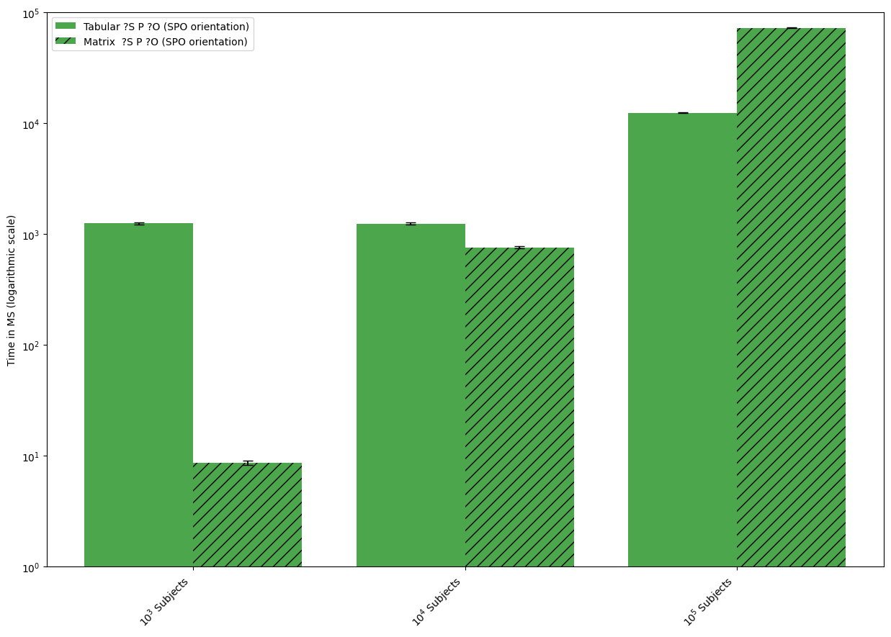
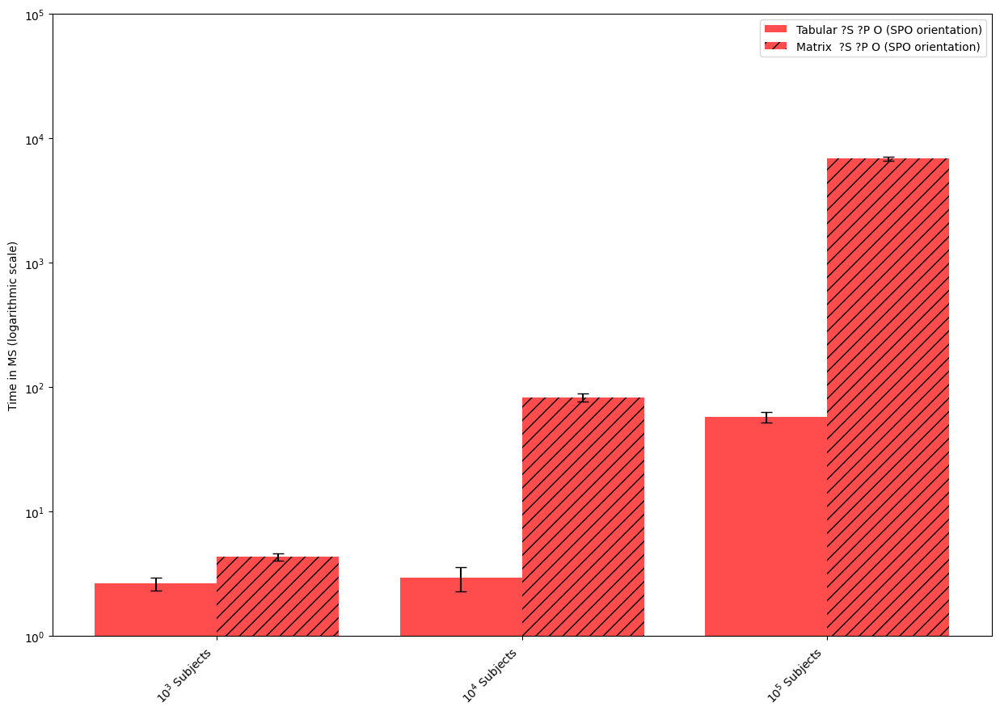

RDF in Zarr
Introduction
- Project sponsored by NumFocus
- Research project for Zarr technology
- Other projects sponsored by Numbfocus
- Jupyter
- Matplotlib
- Pandas
(Subject, Predicate, Object)

http://example.org/alan http://example.org/instanceOf http://example.org/Human .
http://example.org/alan http://example.org/placeOfBirth http://example.org/warrington .
http://example.org/alan http://example.org/placeOfDeath http://example.org/wilmslow .
http://example.org/alan http://example.org/dateOfBirth "1912-06-23"^^http://www.w3.org/2001/XMLSchemadate .
http://example.org/alan http://example.org/employer http://example.org/GCHQ .
http://example.org/warrington http://example.org/country http://example.org/uk .
http://example.org/wilmslow http://example.org/country http://example.org/uk .
http://example.org/wilmslow http://example.org/instanceOf http://example.org/town .
http://example.org/bombe http://example.org/discoverer http://example.org/alan .
http://example.org/bombe http://example.org/instanceOf http://example.org/computer .
http://example.org/bombe http://example.org/manufacturer http://example.org/GCHQ .
UniProt SPARQL Endpoint
- An RDF data format
- Larger than RAM database
- Basic Graph Patterns
Subjects ===================================================
http://example.org/bombe --> 0
http://example.org/warrington --> 1
http://example.org/alan --> 2
http://example.org/wilmslow --> 3
Predicates ==================================================
http://example.org/employer --> 1
http://example.org/country --> 2
http://example.org/placeOfDeath --> 3
http://example.org/placeOfBirth --> 4
http://example.org/manufacturer --> 5
http://example.org/dateOfBirth --> 6
http://example.org/discoverer --> 7
http://example.org/instanceOf --> 8
Objects =====================================================
http://example.org/warrington --> 0
http://example.org/wilmslow --> 1
http://example.org/GCHQ --> 2
"1912-06-23"^^http://www.w3.org/2001/XMLSchema#date --> 3
http://example.org/computer --> 4
http://example.org/alan --> 5
http://example.org/town --> 6
http://example.org/uk --> 7
http://example.org/Human --> 8
Operations
-
:Alan ?P ?O -
?S :instanceOf ?O -
?S ?P :Human
Using Matrices / Adjacency Matrix

Using Matrices / Adjacency Matrix - :Alan ?P ?O

Using Matrices / Adjacency Matrix - ?S :instanceOf ?O

Using Matrices / Adjacency Matrix - ?S ?P :Human

Using Dense Vectors / Tabular Layout
Allowing different orientations
pub enum ReferenceSystem {
SPO,
SOP,
PSO,
POS,
OSP,
OPS,
}
Sharding
This means that:
- We can trade speed in querying for RAM space with sharding
- We can trade disk space




Is there a reproducibility crisis?
- Data Specification
- Library development
- Test new layouts